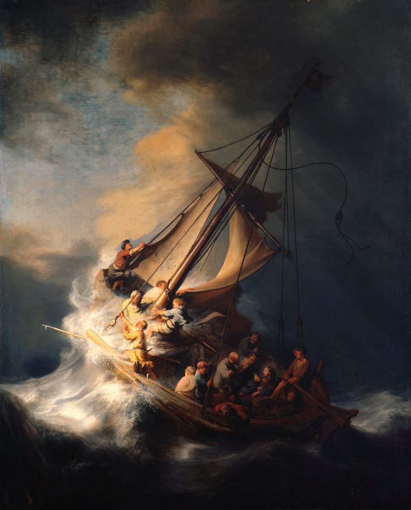

Matthew 8 — The Mister Translation

Rembrandt’s only seascape, painted at twenty-seven. He puts fourteen figures in a boat built for far fewer and tips the whole hull up the diagonal — and one face near the mast, gripping a rope and looking straight out at us rather than at the storm, is usually taken for Rembrandt himself. ⚠ It was cut from its frame in the 1990 Gardner Museum robbery and has never been recovered, so this photograph is now among the better records of it.
{kind=link}
Translator’s Notes
⚠ The healings begin the moment the teaching stops. “When he had come DOWN from the mountain” — the mountain of the Sermon (Matthew 5:1). The summary at 4:23 promised teaching AND healing; chapters 5–7 were the teaching, and chapters 8–9 are the healing. This verse is the hinge, and the crowds who were sitting on the hillside are now following down it.
“A LEPER came and BOWED before him.” Two things. Lepros and the Hebrew tsara’at behind it cover a range of scaling skin conditions and are not confined to what modern medicine calls Hansen’s disease; the ancient category is about ritual purity and exclusion as much as pathology, and this translation keeps the text’s own word rather than substituting a diagnosis. ⚠ And the verb is proskynei — the fourth time in this Gospel, and the sequence is now worth reading whole: foreign astrologers bowed to a child (2:11), Herod lied about wanting to (2:8), the devil demanded it (4:9), and here the first person in Matthew to do it of his own accord and be received is an unclean man with nothing to offer.
“If you are WILLING… I am WILLING.” The leper’s doubt is not about power but about consent — ean thelēs, dynasai, “if you are willing, you are able” — and the answer picks up his own verb and drops the condition: thelō. One word, and this translation keeps the same English on both sides so the reply is heard as the answer it is. KJV “I will; be thou clean”; ASV “I will; be thou made clean”; NWT “I want to. Be made clean.”
⚠ He TOUCHED him — which is the scandal of the paragraph. Under the Law, contact with a leper transmits uncleanness to the toucher (Leviticus 5:3; 13:45–46 puts him outside the camp crying “unclean”). Jesus could have spoken — he heals the centurion’s boy at a distance eight verses later, and cleanses ten lepers by word in Luke — and instead he stretches out a hand. ⚠ Matthew reports no defilement. The contagion runs the other way, and the note is left there rather than turned into a sermon.
“Show yourself to the priest, and offer the GIFT that Moses commanded.” The procedure is Leviticus 14, and it is elaborate: the priest inspects, and the cleansed man brings “two living clean birds, and cedar-wood, and scarlet, and hyssop” (Leviticus 14:4). ⚠ Note what the instruction assumes — that the man will be certified clean by the ordinary machinery of the Law, not exempted from it. “As a testimony to them” is deliberately ambiguous in the Greek (evidence for the priests, or evidence against them), and the versions do not resolve it either.
⚠ “I am not WORTHY” — the Baptist’s exact words in a Roman officer’s mouth. Ouk eimi hikanos. John said it at 3:11 about the sandals he was not fit to carry; the centurion says it about his own roof. Same two words, and the only two people in Matthew who say them are a desert prophet and a Gentile soldier. The sentence became the church’s prayer before communion (Domine, non sum dignus), which is how most readers meet it before they meet it here.
“My BOY” — son or servant? Pais means a child, and by extension a servant; Luke, telling the same story, writes doulos, slave (Luke 7:2), which settles it for most readers, and this translation keeps the ambiguity of Matthew’s word with “boy”. ⚠ Note what the officer says is wrong with him: “paralysed, terribly tormented” — basanizomenos, and the same root returns at verse 29 in the mouths of the demons, who are afraid of being tormented. A man’s suffering and a demon’s dread are named with one word.
⚠ “I will come and heal him” — or “am I to come and heal him?” The Greek is egō elthōn therapeusō auton, with an emphatic egō (“I…”) and no punctuation in the manuscripts, so a question is grammatically available — and some read it that way: a Jewish teacher asked to enter a Gentile house, testing the request, as he tests the Canaanite woman at 15:24–28. ⚠ The library prints the statement, which is how nearly every version takes it, and flags the question-reading rather than hiding it, because the emphatic pronoun is real and is what invites it.
The argument is a soldier’s, and it is exactly right. He does not appeal to worth or to sympathy; he reasons from authority delegated down a chain — “I too am a man under authority”: I say go, and he goes, because behind my word stands Rome. Say it with a word. ⚠ What Jesus “marvelled” at (ethaumasen, one of only two things he is ever said to marvel at) is not piety but a correct inference about how his own authority works.
⚠ “With NO ONE in Israel have I found such faith.” The earliest witnesses read it this way — not one Israelite has shown it; a large part of the later tradition softens it to “not even in Israel,” which is the reading behind KJV (“no, not in Israel”). The harder text is printed here, with the softer one named. NIV and NWT follow the harder reading too.
⚠ “Many will come from east and west… and the sons of the kingdom will be thrown OUT.” Anaklithēsontai — they will recline, the posture of a banquet, with the three patriarchs: the messianic feast of Isaiah 25:6, with Gentiles at the couches. And against it, in the same breath, “the sons of the kingdom” put outside. ⚠ This is the first of seven times Matthew writes “the weeping and the gnashing of teeth,” and the first “outer darkness” — note that both are stated as the reversal of an expectation rather than as a doctrine of the afterlife, and that the whole saying is prompted by a soldier of the occupying army. The Gospel that opened with foreign astrologers keeps making the same point with sharper instruments.
Peter has a MOTHER-IN-LAW, which means Peter has a wife. Penthera, stated without comment, and Paul confirms it decades later when he asks whether he too may not travel with a wife “as the other apostles do, and the brothers of the Lord, and Cephas” (1 Corinthians 9:5). ⚠ It is a small verse with a long history behind it; the library notes the fact and leaves the arguments it has been used in to others.
“She rose and was SERVING him.” Diēkonei — the verb behind “deacon,” in the imperfect: she got up and went on serving. The healing is verified by ordinary work resumed, which is how Matthew usually shows one.
⚠ Isaiah 53:4 — and here Matthew follows the HEBREW rather than the Greek. This is worth stopping on, because it reverses his usual habit. At 3:3, 4:4 and 4:10 Matthew quoted the Greek Old Testament even where it differs from the Hebrew. Here the Hebrew of Isaiah 53:4 reads “surely our diseases he did bear, and our pains he carried” — a plainly physical sentence — while the Greek Old Testament turns the first noun into sins. Matthew’s wording (“our infirmities… our diseases”) tracks the Hebrew, and he applies it, startlingly, not to the cross but to an evening of house calls. ⚠ Which is the honest difficulty in the verse: the church has read Isaiah 53 as the passion, and Matthew cites it over a fever and a crowd of the sick. Both readings are in the text’s own history and the library does not choose between them; it notes that Matthew got there first and got there through the Hebrew.
⚠ “The SON OF MAN” — the first of about thirty times, and Jesus’ own name for himself. Ho huios tou anthrōpou. Two backgrounds, both real, and they pull in opposite directions. In Ezekiel, “son of man” is simply how God addresses the prophet — mortal, a human being, and nothing more. In Daniel 7:13 (which is Aramaic, kevar enash) “one like a son of man” comes with the clouds of heaven to the Ancient of Days and is given dominion and a kingdom that will not pass away. ⚠ So the title can mean “just a man” or “the figure who receives the kingdom,” and Jesus uses it in both directions — here of a man with nowhere to sleep, later of one coming on the clouds (24:30, quoting Daniel). It is almost always on his own lips and almost never on anyone else’s, which is part of its usefulness: it says something without settling it.
“Foxes have holes… nowhere to lay his head.” Answering a volunteer — and note who volunteers: a scribe, from the class Matthew otherwise shows in opposition, offering to follow anywhere. The reply is not a refusal; it is a disclosure of terms. Kataskēnōseis is not quite “nests” but “roosts, encampments” — the birds have somewhere to settle, and the man who has just been given authority over disease does not.
⚠ “Leave the dead to bury their own dead” — and no attempt here to make it comfortable. Burying a father was among the gravest duties a son had, close to the fifth commandment; a priest could defile himself for it (Leviticus 21:2), and rabbinic law let it override almost everything. So the saying is as harsh as it sounds, and Matthew offers no softening. ⚠ The proposals a reader will meet: that the father was not yet dead and the man was asking for an open-ended delay; that this is the “secondary burial” a year later, when the bones are gathered, so the urgency is lower; that “the dead” in the first phrase means the spiritually dead; or that it is simply meant to shock, as the camel and the needle are. ⚠ Each has advocates, none is provable from the sentence, and the library prints them rather than picking. Note only that it is addressed to someone Matthew has already called a disciple, not to a bystander.
⚠ Matthew does not call it a storm. He calls it an EARTHQUAKE. Seismos megas — and Mark (4:37) and Luke (8:23) both use the ordinary word for a squall, lailaps. Matthew’s choice is deliberate and it is a pattern: he uses seismos again for the shaking at the crucifixion (27:51) and for the one at the empty tomb (28:2). ⚠ So the sea does here what the earth does at the death and the resurrection, and this translation keeps “a great shaking” rather than smoothing it to “a furious storm” (NIV) or “a great tempest” (KJV, ASV) — every one of which is a fair rendering of a squall and loses the word Matthew actually wrote.
“Why are you COWARDLY, you of LITTLE FAITH?” Deiloi is stronger than “afraid” — it is the word for cowardice, the disqualifying fear that sends a man home from the army in Deuteronomy 20:8. And oligopistoi is one word, a Matthean coinage as far as we can tell: “little-faiths.” ⚠ It is not the same as unbelief. They woke him, which is a kind of faith; he objects to the size of it, not its absence. KJV “why are ye fearful, O ye of little faith?”; NWT “Why are you fainthearted, you with little faith?”
⚠ He REBUKED the sea — the verb he uses on demons. Epetimēsen is the word for silencing an unclean spirit (Mark 1:25; Matthew 17:18). The wind and the water are addressed as something to be put down, which is how the Old Testament talks about the sea: “you rule the proud swelling of the sea; when its waves arise, you still them” (Psalm 89:9 — 89:10 in the Hebrew), and “who stills the roaring of the seas” (Psalm 65:7). ⚠ Which is why the question in verse 27 is the right question and is left unanswered: “What sort of man is this?” — potapos, originally “from what country?”. The men in the boat do not conclude anything. They ask.
⚠ Matthew has TWO demon-possessed men; Mark and Luke have one. Checked in the Greek: Matthew 8:28 reads dyo daimonizomenoi, while Mark 5:2 has “a man” and Luke 8:27 “a certain man.” It is a real difference and not a copying slip — Matthew does the same thing at Jericho, where he has two blind men (20:30) and Mark has one (10:46). ⚠ The explanations offered: that Matthew, writing for readers who knew the rule that a matter is established by two witnesses (Deuteronomy 19:15), doubles the witnesses; that he has merged two incidents; that Mark has singled out the one who spoke. The library prints Matthew as Matthew wrote him and names the difference rather than harmonizing it away.
⚠ Gadarenes — or Gerasenes, or Gergesenes? The manuscripts differ here and across the three Gospels, and the geography is the reason: Gadara was a city some six miles from the lake, Gerasa a good thirty, and neither sits on a shore with a cliff. The earliest witnesses of Matthew read Gadarenes (printed here); much of the later tradition reads Gergesenes, a name Origen argued for in the third century precisely because he knew the other two did not fit the topography. ⚠ Both a scribe’s correction toward plausible geography and an original regional name are live possibilities; what can be said is that the difficulty was noticed early and honestly.
“Before the TIME to torment us.” The demons concede the outcome and dispute only the schedule — and the word is basanisai, the same root used of the centurion’s boy “terribly tormented” in verse 6. ⚠ They also know the title the chapter has been circling: they call him “Son of God,” which no human being in Matthew has yet said out loud to his face.
The pigs are the point of the setting. A herd of two thousand unclean animals grazing near a graveyard tells you where you are without a sentence of explanation: this is Gentile country, across the water, exactly the region the crowd of 4:25 came from. ⚠ Matthew records the loss and offers no defence of it, and the library will not manufacture one; note only that the men whose deliverance cost the herd are the reason the town has a story to tell.
⚠ And the chapter ends by being asked to leave. It opened with “large crowds followed him” (v1) and closes with “the whole town came out… and appealed to him to move away from their districts.” Same verb of appealing (parakaleō) that the centurion used in verse 5 to ask him to come, and that the demons used in verse 31 — three appeals in one chapter: come, send us, and go. Matthew does not comment on the arrangement. He simply lets the last one be a town’s.
Patterns worth carrying forward
Where this translation keeps the exact / distinct words: “a leper” kept as the text’s own category rather than a modern diagnosis; “bowed before” for proskyneō, a fourth time; “if you are willing… I am willing” keeping one verb on both sides; “I am not worthy” (hikanos) matched to the Baptist’s at 3:11; “my boy” for pais, keeping Matthew’s ambiguity where Luke has “slave”; “tormented” (basanizō) in verse 6 and verse 29 alike; “recline” for the banquet posture; “a great shaking” (seismos) rather than “storm,” because Matthew uses the earthquake word; “cowardly” for deiloi; “you of little faith” for the single word oligopistoi; “rebuked” for what he does to the sea, the verb used on spirits; and “Gadarenes,” the earliest reading, with the rival names given.
Echoes paid. The three-verb summary of 4:23 — the teaching was chapters 5–7 and the healing starts here, the mountain descended in verse 1; proskyneō from the magi, Herod and the devil (2:11, 2:8, 4:9), now offered by a leper; hikanos, “not worthy,” from 3:11; the Gentiles of Isaiah’s “Galilee of the nations” and of the crowd at 4:25, now a centurion at the table and a herd of pigs across the water; Leviticus 14’s offering for a cleansed leper; Isaiah 53:4, quoted from the Hebrew; and Daniel 7:13’s Aramaic “one like a son of man.”
Echoes planted. “The Son of Man,” here for the first time and used of homelessness, which returns at 24:30 on the clouds of Daniel; “the weeping and the gnashing of teeth,” the first of seven; “you of little faith,” which Jesus will say to Peter on the water (14:31) and to all of them again (16:8); seismos, the shaking that returns at the cross (27:51) and the tomb (28:2); “Son of God,” said here by demons before any human says it to his face; and the doubling of witnesses, which recurs with the two blind men at 20:30.
Next in this book: chapter 9 — a paralytic forgiven before he is healed, a tax collector called from his booth, the question about fasting and the new wine, a ruler’s daughter and a woman who touches a garment; and at the end the summary sentence from 4:23 returns — not quite word for word — closing the frame around the Sermon and the healings.